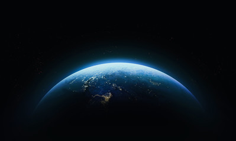
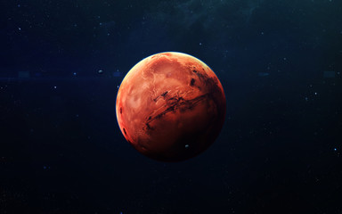

Planetary Facts
Terrestrial Planets
Terrestrial planets are rocky planets that have solid surfaces. These include Mercury, Venus, Earth, and Mars. They are located closer to the Sun and are smaller than gas giants. Earth is the only known planet that supports life. Mars has been explored extensively by robotic missions. These planets provide insight into planetary geology.
Gas Giants
Gas giants are large planets made mostly of hydrogen and helium. Jupiter and Saturn are the largest planets in the solar system. They have thick atmospheres and many moons. Jupiter's gravity helps protect inner planets from asteroids. Saturn is famous for its ring system. These planets play a major role in the solar system's structure.
- Mercury is the smallest planet
- Venus is the hottest planet
- Earth supports life
- Jupiter is the largest planet


Explore more at National Geographic and European Space Agency.